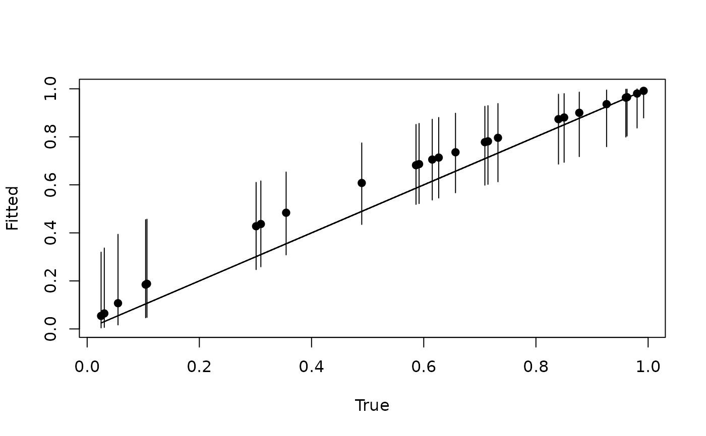

Function for prediction at new locations for single-species occupancy models
predict.PGOcc.RdThe function predict collects posterior predictive samples for a set of new locations given an object of class `PGOcc`. Prediction is possible for both the latent occupancy state as well as detection.
Usage
# S3 method for class 'PGOcc'
predict(object, X.0, ignore.RE = FALSE, type = 'occupancy', ...)Arguments
- object
an object of class PGOcc
- X.0
the design matrix of covariates at the prediction locations. This should include a column of 1s for the intercept if an intercept is included in the model. If random effects are included in the occupancy (or detection if
type = 'detection') portion of the model, the levels of the random effects at the new locations should be included as a column in the design matrix. The ordering of the levels should match the ordering used to fit the data inPGOcc. Columns should correspond to the order of how covariates were specified in the corresponding formula argument ofPGOcc. Column names of the random effects must match the name of the random effects, if specified in the corresponding formula argument ofPGOcc.- ignore.RE
logical value that specifies whether or not to remove random occurrence (or detection if
type = 'detection') effects from the subsequent predictions. IfTRUE, random effects will be included. IfFALSE, random effects will be set to 0 and predictions will only be generated from the fixed effects.- type
a quoted keyword indicating what type of prediction to produce. Valid keywords are 'occupancy' to predict latent occupancy probability and latent occupancy values (this is the default), or 'detection' to predict detection probability given new values of detection covariates.
- ...
currently no additional arguments
Note
When ignore.RE = FALSE, both sampled levels and non-sampled levels of random effects are supported for prediction. For sampled levels, the posterior distribution for the random intercept corresponding to that level of the random effect will be used in the prediction. For non-sampled levels, random values are drawn from a normal distribution using the posterior samples of the random effect variance, which results in fully propagated uncertainty in predictions with models that incorporate random effects.
Author
Jeffrey W. Doser jwdoser@ncsu.edu,
Andrew O. Finley finleya@msu.edu
Value
A list object of class predict.PGOcc. When type = 'occupancy', the list consists of:
- psi.0.samples
a
codaobject of posterior predictive samples for the latent occupancy probability values.- z.0.samples
a
codaobject of posterior predictive samples for the latent occupancy values.
When type = 'detection', the list consists of:
- p.0.samples
a
codaobject of posterior predictive samples for the detection probability values.
The return object will include additional objects used for standard extractor functions.
Examples
set.seed(400)
# Simulate Data -----------------------------------------------------------
J.x <- 10
J.y <- 10
J <- J.x * J.y
n.rep <- sample(2:4, J, replace = TRUE)
beta <- c(0.5, 2)
p.occ <- length(beta)
alpha <- c(0, 1)
p.det <- length(alpha)
dat <- simOcc(J.x = J.x, J.y = J.y, n.rep = n.rep, beta = beta, alpha = alpha,
sp = FALSE)
# Split into fitting and prediction data set
pred.indx <- sample(1:J, round(J * .25), replace = FALSE)
y <- dat$y[-pred.indx, ]
# Occupancy covariates
X <- dat$X[-pred.indx, ]
# Prediction covariates
X.0 <- dat$X[pred.indx, ]
# Detection covariates
X.p <- dat$X.p[-pred.indx, , ]
# Package all data into a list
occ.covs <- X[, 2, drop = FALSE]
colnames(occ.covs) <- c('occ.cov')
det.covs <- list(det.cov = X.p[, , 2])
data.list <- list(y = y,
occ.covs = occ.covs,
det.covs = det.covs)
# Priors
prior.list <- list(beta.normal = list(mean = rep(0, p.occ),
var = rep(2.72, p.occ)),
alpha.normal = list(mean = rep(0, p.det),
var = rep(2.72, p.det)))
# Initial values
inits.list <- list(alpha = rep(0, p.det),
beta = rep(0, p.occ),
z = apply(y, 1, max, na.rm = TRUE))
n.samples <- 5000
n.report <- 1000
# Note that this is just a test case and more iterations/chains may need to
# be run to ensure convergence.
out <- PGOcc(occ.formula = ~ occ.cov,
det.formula = ~ det.cov,
data = data.list,
inits = inits.list,
n.samples = n.samples,
priors = prior.list,
n.omp.threads = 1,
verbose = TRUE,
n.report = n.report,
n.burn = 4000,
n.thin = 1)
#> ----------------------------------------
#> Preparing to run the model
#> ----------------------------------------
#> ----------------------------------------
#> Model description
#> ----------------------------------------
#> Occupancy model with Polya-Gamma latent
#> variable fit with 75 sites.
#>
#> Samples per Chain: 5000
#> Burn-in: 4000
#> Thinning Rate: 1
#> Number of Chains: 1
#> Total Posterior Samples: 1000
#>
#> Source compiled with OpenMP support and model fit using 1 thread(s).
#>
#> ----------------------------------------
#> Chain 1
#> ----------------------------------------
#> Sampling ...
#> Sampled: 1000 of 5000, 20.00%
#> -------------------------------------------------
#> Sampled: 2000 of 5000, 40.00%
#> -------------------------------------------------
#> Sampled: 3000 of 5000, 60.00%
#> -------------------------------------------------
#> Sampled: 4000 of 5000, 80.00%
#> -------------------------------------------------
#> Sampled: 5000 of 5000, 100.00%
summary(out)
#>
#> Call:
#> PGOcc(occ.formula = ~occ.cov, det.formula = ~det.cov, data = data.list,
#> inits = inits.list, priors = prior.list, n.samples = n.samples,
#> n.omp.threads = 1, verbose = TRUE, n.report = n.report, n.burn = 4000,
#> n.thin = 1)
#>
#> Samples per Chain: 5000
#> Burn-in: 4000
#> Thinning Rate: 1
#> Number of Chains: 1
#> Total Posterior Samples: 1000
#> Run Time (min): 0.0049
#>
#> Occurrence (logit scale):
#> Mean SD 2.5% 50% 97.5% Rhat ESS
#> (Intercept) 0.9489 0.4654 0.1676 0.8968 1.9695 NA 112
#> occ.cov 1.8613 0.6953 0.7118 1.7820 3.3002 NA 86
#>
#> Detection (logit scale):
#> Mean SD 2.5% 50% 97.5% Rhat ESS
#> (Intercept) -0.1822 0.2089 -0.5716 -0.1865 0.2245 NA 402
#> det.cov 1.1094 0.2399 0.6551 1.0989 1.5816 NA 526
# Predict at new locations ------------------------------------------------
colnames(X.0) <- c('intercept', 'occ.cov')
out.pred <- predict(out, X.0)
psi.0.quants <- apply(out.pred$psi.0.samples, 2, quantile, c(0.025, 0.5, 0.975))
plot(dat$psi[pred.indx], psi.0.quants[2, ], pch = 19, xlab = 'True',
ylab = 'Fitted', ylim = c(min(psi.0.quants), max(psi.0.quants)))
segments(dat$psi[pred.indx], psi.0.quants[1, ], dat$psi[pred.indx], psi.0.quants[3, ])
lines(dat$psi[pred.indx], dat$psi[pred.indx])
